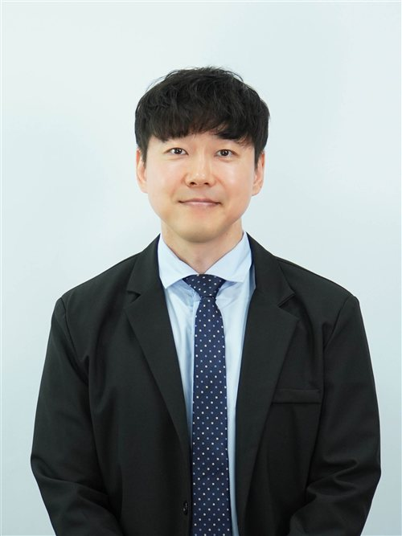
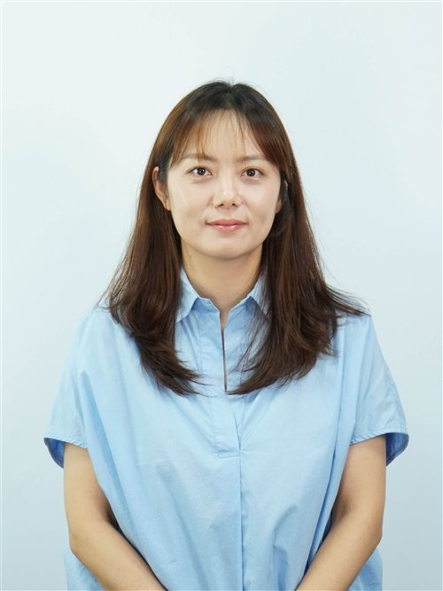

KISMUN 2026
The people who lead and oversee the conference.

Dear delegates, chairs, faculty advisors, distinguished guests, and members of the organizing committee,
I am honored and delighted to invite you to this year's KISMUN conference. As students, speakers, and representatives of various countries, today we come together as individuals who are prepared to think, listen, ask, debate, and lead.
This year's theme is "Voice Your Value, Value Your Voice". The message conveyed by this theme is both simple and compelling. "Voice Your Value" suggests that your opinion, thoughts, questions, and suggestions should be acknowledged; therefore, they have merit. Each delegate brings a voice into the committee room which can challenge thinking patterns, develop cooperation, and create change.
The second part of our theme "Value Your Voice", indicates that although speaking is important, it is equally essential to speak with purpose. When using your voice to express what you believe in – such as peace, justice, equality, dignity, sustainability, cooperation and respect – you are expressing the value of your beliefs.
An effective delegate is not necessarily the one who speaks the loudest, rather the one who speaks clearly, responsibly and with conviction.
During the conference, you will engage in discussions on some very significant international problems. You may not agree on everything. You may encounter tough questions. And you may need to justify your country's position while attempting to find areas of mutual interest. These are some of the fundamental principles of model united nations. Moreover, it demonstrates to us that diplomacy is not merely about being able to win every debate. Rather, it involves listening to diverse views, developing practical solutions to the challenges at hand, and collaborating toward finding answers to these issues despite differing opinions.
To our first-time delegates, I warmly welcome you. Don't hesitate to raise your placard or make a speech. Everyone has been uncertain at least once prior to becoming an experienced delegate. MUN is a place where growth occurs and your willingness to take part in this process is indicative of your courage.
Returning delegates, I implore you to demonstrate your leadership through humility. Support new delegates and help them improve their knowledge base. Raise the bar of debate. Leadership is demonstrated through speeches, however it is just as much demonstrated through respectful listening and collaborative approaches.
Before this conference begins, I would like each of you to remember that your voice has value. Use it wisely. Use it respectfully. Use it so that you represent not only the nation which you were appointed to represent, but also that individuals can collectively work towards making a better world.
Once again I welcome you to KISMUN 2026. I wish you all an inspirational, stimulating and worthwhile experience.
Sincerely,
Tom Maciariello
Director
KISMUN 2026

Dear Delegates, Chairs, Staff, and Advisors,
Welcome to KISMUN 2026!
I am thrilled to welcome each of you to this year's conference. In the process leading up to KISMUN 2026, watching our student team work tirelessly to bring this conference to life has been truly inspiring, and we are all so excited to see you take the floor.
The core message behind KISMUN 2026, "Value Your Voice, Voice Your Value," is a powerful reminder of why we gather here. Finding your voice and learning to stand by your beliefs is a continuous process—and it is rarely easy.
In fact, the MUN journey can be truly strenuous. Digging into complex global issues, speaking in front of fellow students, navigating intense debates, and drafting resolutions under tight deadlines will push you beyond your comfort zone. There will likely be moments when you hesitate, feel uncertain, or worry about making a mistake.
Real growth happens precisely in those challenging moments.
MUN is not about delivering a flawless speech on your first try or winning every debate; it is about finding the courage to raise your placard, stepping forward despite the nerves, and turning every challenge into a valuable learning experience.
Whether this is your very first conference or your final one, I encourage you to immerse yourselves fully into these three days. Support one another, listen to differing perspectives with respect, and take pride in your progress. Make this conference a deeply meaningful experience—one where you discover just how much your voice truly matters.
Thank you to our Secretariat, Chairs, Staff, and Mr. Tom for the dedication and efforts put into preparing for this conference. To every delegate stepping into the committee room: welcome, good luck, and I look forward to watching you grow over the next three days!
Sincerely,
Uh Jin Lim
Director
KISMUN 2026